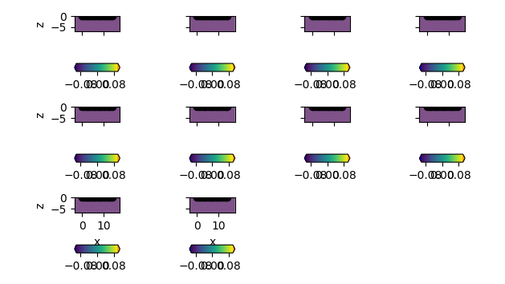
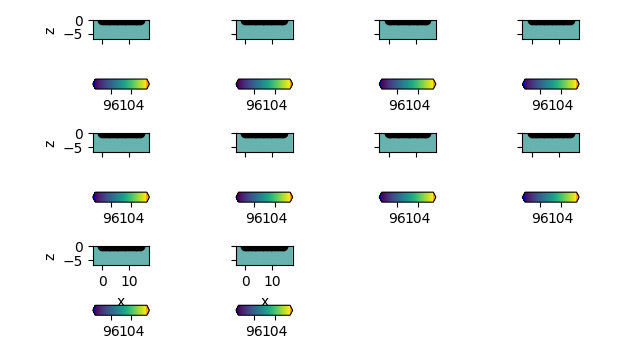
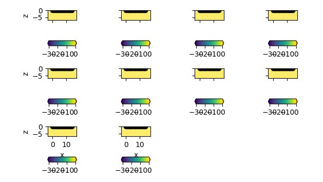

Note
Click here to download the full example code
Generating sEIT forward models¶
The eit manager can be used to easily create forward models using different parameterizations.
imports
import numpy as np
import crtomo
we need a FE grid
grid = crtomo.crt_grid.create_surface_grid(nr_electrodes=15, spacing=1)
grid.plot_grid()
Out:
This grid was sorted using CutMcK. The nodes were resorted!
Triangular grid found
define frequencies
frequencies = np.logspace(-3, 3, 10)
# create the eit manager
eitman = crtomo.eitMan(frequencies=frequencies, grid=grid)
start with a homogeneous complex resistivity distribution
eitman.add_homogeneous_model(magnitude=100, phase=0)
r = eitman.plot_forward_models(maglim=[90, 110])
print(r)
# save to files
r['rmag']['fig'].savefig('fwd_model_hom_rmag.png', dpi=300)
r['rpha']['fig'].savefig('fwd_model_hom_rpha.png', dpi=300)
- 
Out:
[0.001, 0.004641588833612777, 0.021544346900318832, 0.1, 0.46415888336127775, 2.154434690031882, 10.0, 46.41588833612773, 215.44346900318823, 1000.0]
{'rpha': {'axes': array([[<matplotlib.axes._subplots.AxesSubplot object at 0x7f03fe5cd1d0>,
<matplotlib.axes._subplots.AxesSubplot object at 0x7f03fa18cb00>,
<matplotlib.axes._subplots.AxesSubplot object at 0x7f03fe7d7ef0>,
<matplotlib.axes._subplots.AxesSubplot object at 0x7f03fe897320>],
[<matplotlib.axes._subplots.AxesSubplot object at 0x7f03fe8b0710>,
<matplotlib.axes._subplots.AxesSubplot object at 0x7f03fe79c7f0>,
<matplotlib.axes._subplots.AxesSubplot object at 0x7f03fe7b4be0>,
<matplotlib.axes._subplots.AxesSubplot object at 0x7f03fe6ccfd0>],
[<matplotlib.axes._subplots.AxesSubplot object at 0x7f03fe6ec400>,
<matplotlib.axes._subplots.AxesSubplot object at 0x7f03fe7037f0>,
<matplotlib.axes._subplots.AxesSubplot object at 0x7f03fe69bbe0>,
<matplotlib.axes._subplots.AxesSubplot object at 0x7f03fe6b4fd0>]],
dtype=object), 'fig': <Figure size 629.921x354.331 with 22 Axes>}, 'rmag': {'axes': array([[<matplotlib.axes._subplots.AxesSubplot object at 0x7f03fe7cfa20>,
<matplotlib.axes._subplots.AxesSubplot object at 0x7f03fe7c90f0>,
<matplotlib.axes._subplots.AxesSubplot object at 0x7f03d250f4e0>,
<matplotlib.axes._subplots.AxesSubplot object at 0x7f03d25078d0>],
[<matplotlib.axes._subplots.AxesSubplot object at 0x7f03fe602cc0>,
<matplotlib.axes._subplots.AxesSubplot object at 0x7f03fe5d10f0>,
<matplotlib.axes._subplots.AxesSubplot object at 0x7f03d235c4e0>,
<matplotlib.axes._subplots.AxesSubplot object at 0x7f03d238f8d0>],
[<matplotlib.axes._subplots.AxesSubplot object at 0x7f03d236acc0>,
<matplotlib.axes._subplots.AxesSubplot object at 0x7f03d25360f0>,
<matplotlib.axes._subplots.AxesSubplot object at 0x7f03d254b4e0>,
<matplotlib.axes._subplots.AxesSubplot object at 0x7f03fec26898>]],
dtype=object), 'fig': <Figure size 629.921x354.331 with 22 Axes>}}
now we can start parameterizing the subsurface
eitman.set_area_to_single_colecole(
0, 5, -2, 0,
[100, 0.1, 0.04, 0.8]
)
r = eitman.plot_forward_models(maglim=[90, 110], phalim=[-30, 0])
# save to files
r['rmag']['fig'].savefig('fwd_model_par_rmag.png', dpi=300)
r['rpha']['fig'].savefig('fwd_model_par_rpha.png', dpi=300)
- 
- 
add configurations
configs = np.array((
(1, 3, 5, 4),
(5, 7, 10, 8),
))
eitman.add_to_configs(configs)
conduct forward modeling
eitman.model()
measurements = eitman.measurements()
Out:
attempting modeling
reading voltages
attempting modeling
reading voltages
attempting modeling
reading voltages
attempting modeling
reading voltages
attempting modeling
reading voltages
attempting modeling
reading voltages
attempting modeling
reading voltages
attempting modeling
reading voltages
attempting modeling
reading voltages
attempting modeling
reading voltages
modeled SIP signatures can be retrieved as a dict:
sip_sigs = eitman.get_measurement_responses()
print(sip_sigs)
Out:
{(5, 7, 10, 8): <reda.eis.plots.sip_response object at 0x7f03ca1f9dd8>, (1, 3, 5, 4): <reda.eis.plots.sip_response object at 0x7f03ca1f9ba8>}
plot modeled SIP signatures
for key, obj in eitman.get_measurement_responses().items():
obj.plot(filename='mod_sip_{}.png'.format(key), dtype='r')
Extract SIP signature at one point from the forward model
sip_one_p = eitman.extract_points(
['forward_rmag', 'forward_rpha'],
np.atleast_2d(np.array((1, -1)))
)
# import IPython
# IPython.embed()
Total running time of the script: ( 0 minutes 24.566 seconds)